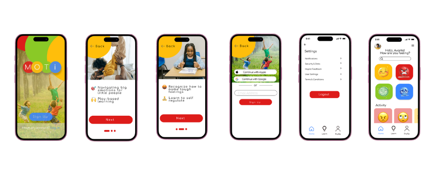
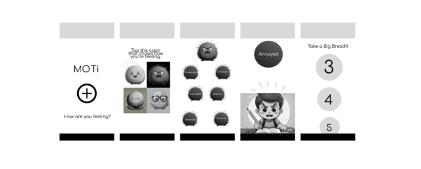
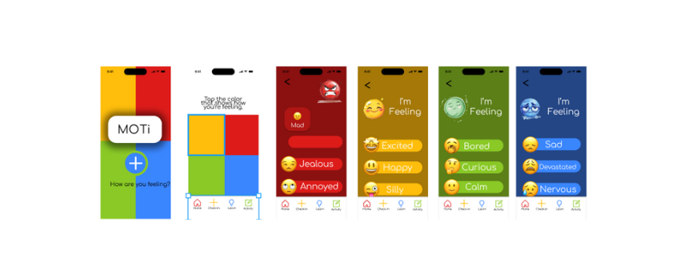

MOTi: Helping Kids Navigate Big Emotions
Designer & Researcher: Kenyatta Ladd
Project Overview
Project Duration: January 2025 – March 2025
The Product: MOTi is a mobile app that supports children ages 5–13 in recognizing and regulating emotions through play-based learning. The app incorporates emotional check-ins, interactive games, and accessible design to promote emotional growth.
The Problem: Many children struggle to process emotions, leading to behavioral challenges at home and in school. Caregivers need SEL-aligned tools that support emotional development outside therapy.
The Goal: To create a user-friendly, engaging tool that helps children build emotional vocabulary and coping strategies through exploration, play, and repetition.
My Role: UX Designer & Researcher
Responsibilities: User Research, Ideation, Wireframing, Prototyping
Starting the Design
MOTi's core user loop integrates emotional check-ins, visual/emotive education, and calming exercises. I emphasized accessibility via haptic feedback, simple iconography, and support for multiple languages.
Digital Wireframes
Wireframes explored a friendly interface and featured expressive characters to support engagement and independent use. Screens focused on emotions, reflection activities, and progress feedback.
Low-Fidelity Prototype
Tested the core loop for emotional selection, activity completion, and navigation flow.
Usability Testing & Iteration
Moderated peer testing revealed areas for clarity improvement around navigation, progress indicators, and feedback loops.
Key Findings:
- Users appreciated the intuitive emotional path structure.
- Visuals were engaging and clear for the age group.
- Some confusion existed around app progression and input flow.
Design Iterations:
- Improved screen labeling and visual hierarchy
- Added feedback animations and haptic cues
- Revised emotional pathways to enhance flow and clarity
Reflections
What I Learned: MOTi helped me translate emotional insight into digital interaction. It reinforced the value of designing with empathy, simplicity, and accessibility in mind. Next steps include co-designing with children and testing the app in classroom settings to further validate its impact.